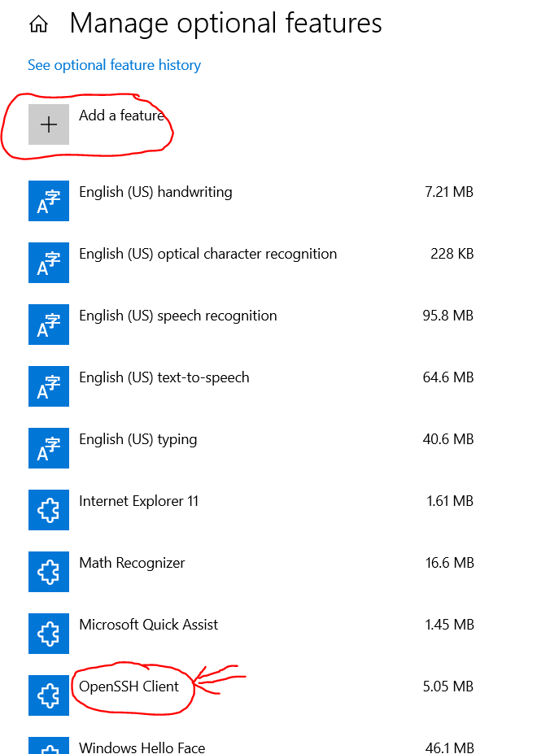
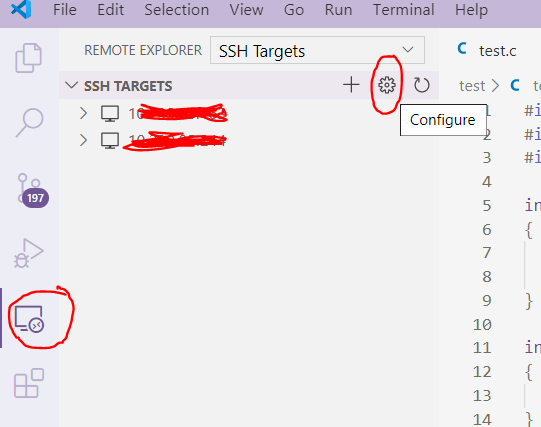
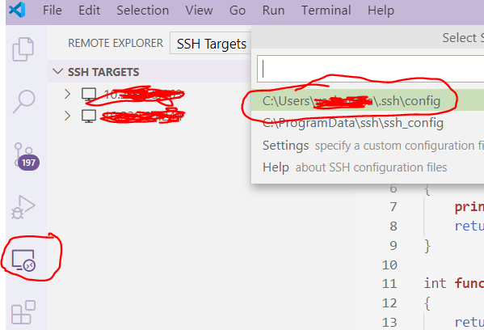
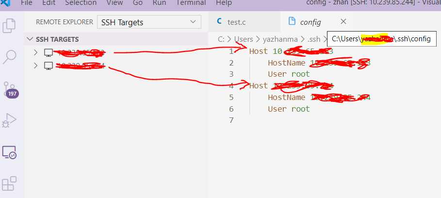
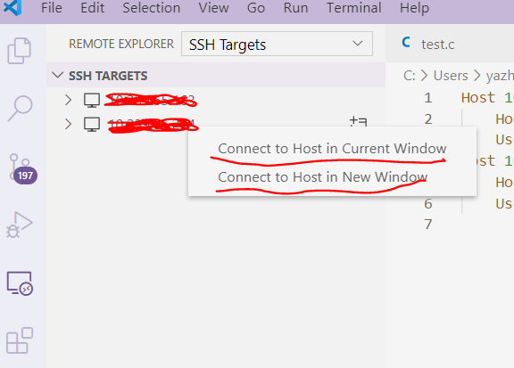
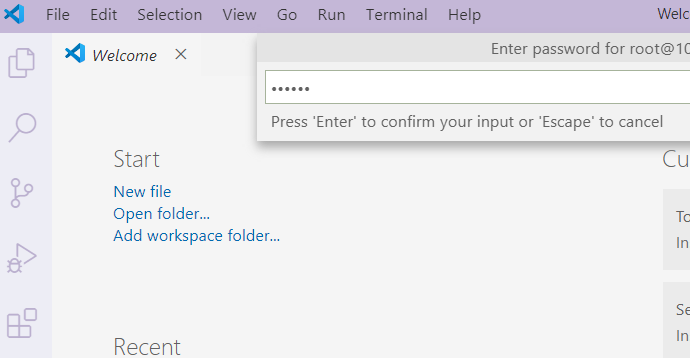
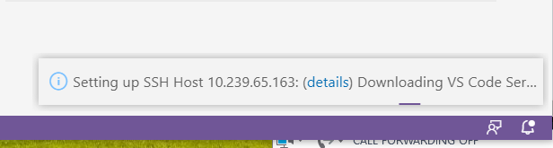

- 查看 Windows10 是否已安装或开启 ssh-client，默认 Windows10 自带的有
Windows 10 : 设置 -> 应用 (APPS) -> 应用和功能 (APP & features) -> 管理可选功能 (Manage app execution aliases)

没有的话需要点击如图上面的 Add a feature，install 一下.
- Centos
1. //安装 yum install -y openssl openssh-server | |
//重启sshd服务 systemctl restart sshd.service | |
//自动启动 systemctl enable sshd | |
2. $cd ~/.ssh/ |
此目录如果没有 authorized_keys 文件需要 touch 新建一个，里面需要存放 Window10 的公匙 (id_rsa.pub, 另外 id_rsa 是 Window10 的密匙).
- 安装 VS code， 安装扩展 (Extensions)"Remote Developoment" 插件，会自动安装其他的 Remote 插件，其中会包含 Remote-SSH
安装完成出现如下选项

添加 config 文件

添加 linux 主机
Host 后面接空格，名字随便写，显示在左边
HostName 主机IP
User root

右击要连接的 linux，选择在当前页面或新打开 Vscode

输入 linux 登录密码，如果出现需要输入密码多次可能之前链接过，在 linux /root/.vscode-server 生成有文件，删掉，再重新用 Vscode 链接…

观察 VScode 右下角等待连接成功
Setting up SSH Host UserName:(details) Downloading VS Code Server

最后点击 Open folder 就可以了
后边遇到 vscode 一直连不上 linux 情况
解决方法一:
$ df -hl 查看linux ~/ 等主目录是否已占满，删除一些文件释放空间后再连接就可以了 |
解决方法二:
是查看 linux /tmp 临时文件发现占满了，全部删掉，再用 windows 上得 VS code 连接就可以了
原因是 vscode 连接 linxu 会自动在 linux 的 /tmp 生成一些文件
# Linux 重装系统后再用 windowsshangVScode 连接报如下错误:
Could not establish connection to "IP". The process tried to write to a nonexistent pipe.
原因是 windows 与 linux 连接成功后会在 C:\Users\ 用户名.ssh\known_hosts 添加对应 Linux 的密匙信息，把它相关的内容删掉.
# VScode 连接 Linux Waiting for /root/.vscode-server/bin/***/vscode-scp-done.flag and vscode-server.tar.gz to exist
解决方法如下链接:
参考链接
ps -aux | grep vscode | |
kill -9 PID | |
rm -rf ~/.vscode-server |
再重新用 Vscode 链接
# VScode 链接远程机器一致让输入远程机器密码
解决方法是登陆远程机器然后删除 /root/.vscode-server/bin/ 下最新的文件夹如
$ cd /root/.vscode-server/bin | |
$ ls -alh | |
drwxr-xr-x 2 root root 106 Oct 9 10:00 58bb7b2331731bf72587010e943852e13e6fd3cf | |
drwxr-xr-x 6 root root 150 Sep 13 18:28 a0479759d6e9ea56afa657e454193f72aef85bd0 | |
drwxr-xr-x 6 root root 150 Sep 16 13:44 e790b931385d72cf5669fcefc51cdf65990efa5d | |
$ rm -rf 58bb7b2331731bf72587010e943852e13e6fd3cf |
之后再次尝试用 VScode 连接远程机器就可以了